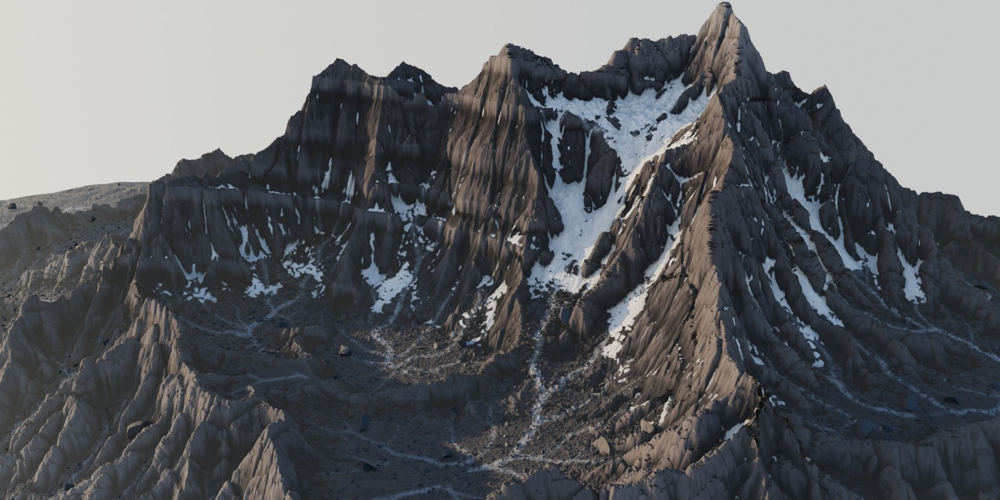
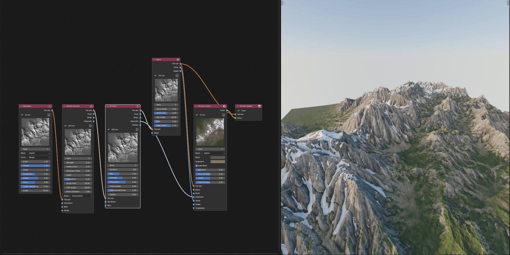
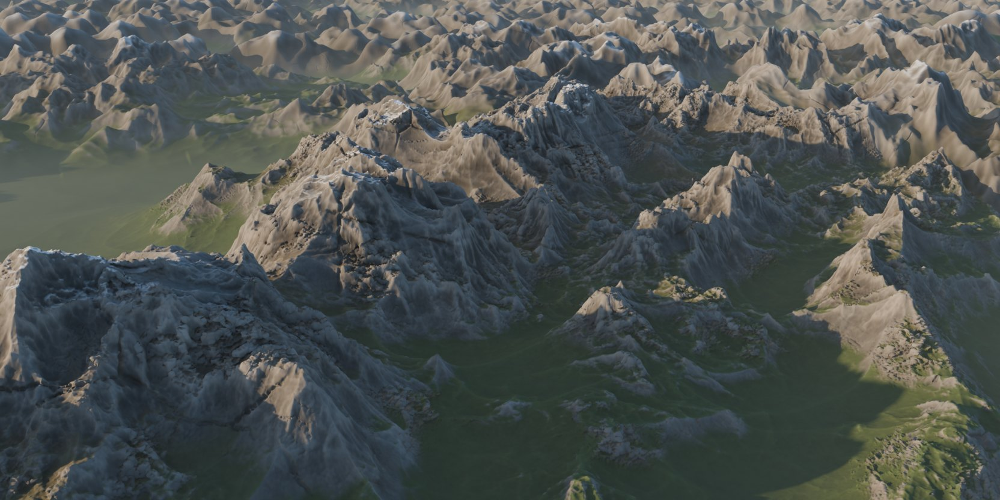
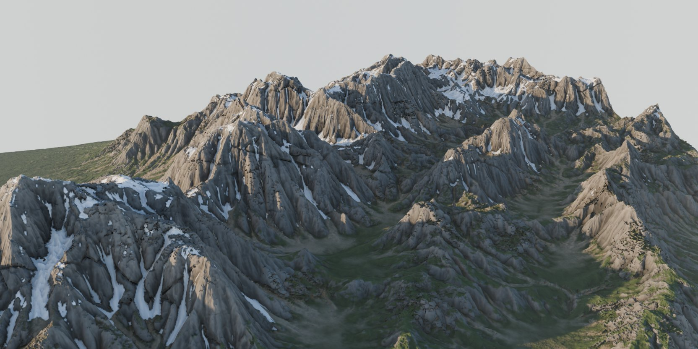
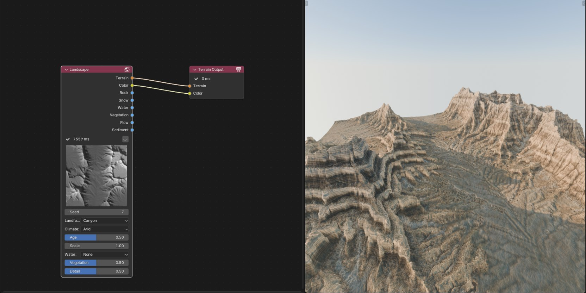

Generate, erode, colour and export photoreal landscapes, built node by node.
Build any terrain, node by node.
Lithos Terrain brings its own node editor. Start from a mountain, carve the valleys, let rain erode them, add snow and colour, and watch the terrain update as you connect each node. Every node shows a live preview, and only the nodes you change are computed again.
Live previews
A thumbnail on every node and a fast preview mesh. Preview any node on the terrain itself, as height, mask or colour.
Preview & Final
Iterate on a fast preview mesh, then build the Final terrain up to 4K with 4096 surface maps.
Built for big graphs
Node groups, portals, a result cache and background builds that never block the interface.

Inside the app · this graph builds Final 2048 in 3.5 s on an RTX 4060Erosion that looks like a real place.
Water carves branching valley networks, sediment settles into the hollows, and thermal and glacial erosion shape cliffs, scree and U-shaped valleys. Drag the slider: the same six-node terrain, before and after the simulation.


One node. A whole landscape.
Pick a landform and a climate, set the age, the snow line, water and vegetation, and the Landscape node builds a complete natural terrain: shaped, eroded, coloured, with rock, snow, water, vegetation, flow and sediment masks ready to use. Landscape → Terrain Output is a finished graph.
6 landforms
Mountain range, alpine massif, highland valley, rolling hills, canyon and volcano.
4 climates
Alpine, temperate, arid and cold, each with its own colours, vegetation and snow.
Quick Landscape
A one-click template: a finished terrain the moment you create the project.

Landscape → Terrain Output · that is the whole graphRock that weathers like rock.
Rock Weathering breaks cliffs into beds, joints and blocks. New in 0.29, Rock Layers adds hard and soft strata with dip and folds: linked into Stream and Thermal Erosion, hard beds stand as cliffs while soft beds fail into talus, for stepped canyon walls and scree aprons.
135 ready-made terrains. All of them editable.
Canyons, glaciers, volcanoes, mesas, dunes, crater lakes, forests and highland valleys in 18 families. Each preset opens as a full node graph you can take apart and make your own.
Erode any mesh.
Object Height turns a model into terrain, Heightmap Image reads any height map, and Paint Mask lets you paint where things happen, right in the viewport. Then erode it like any other terrain.
Every map, ready for any engine.
Height, colour, normal, roughness, occlusion and every mask: 16-bit PNG, float OpenEXR or RAW, up to 8193 samples, tiled up to 8 × 8, with sizes for game-engine terrains. A JSON sidecar records the world size and height.
Faster, deeper, more natural.
Landscape
A complete natural terrain from one node: landform, climate, age, snow line, water, vegetation, detail.
Rock Layers
Hard and soft beds in 3D; with Stream and Thermal Erosion they give stepped cliffs and talus.
Cleaner erosion
No worm-like ridges, far less sediment sheeting, crisp V-shaped banks. Mass stays exact.
Up to 5× faster builds
Final builds on the CPU in a fraction of the time, with results identical to the previous version.
79 nodes in nine categories.
Landscape, Mountain, Ridged Noise, Hills, Uplift, Canyon, Dunes, Crater, Volcano, Island, Example Synth
Erosion, Stream Erosion, Thermal Erosion, Glacier, Glacial Erosion, Alluvial Fans, Shallow Water, Rock Weathering, Rivers, Water, Fill Sinks, Snow, Sediments, Debris, Vegetation
Combine, Levels, Remap, Curve, Band Equalizer, Shaper, Filter, Morphology, Warp, Transform, Distance, Mixer
Noise, Cellular, Gabor Noise, Pattern, Shape, Gradient, Constant, Heightmap Image, Object Height, Paint Mask
Rock Layers, Selector, Flow Map, Normal Map, Shading, Material Mask, Color Select, Soil Map, Surface Texture
Terrain Colors, Gradient Map, Photo Ramp, Color Flow, Color Weathering, Mix Color, Color Adjust, Separate Color, Combine Color
Terrace, Stratify, Surface Detail, Rocks, Scatter Stamps, Gully Detail
Math, Switch, Make Tileable, Portal Send, Portal Receive
Terrain Output, Mask Output
Everything to finish the shot.
Biomes & scatter
Five biomes of trees, shrubs, grass and rocks placed by the terrain's own masks. Scatter your own models or collections too.
Sky & haze
One click sets up the sun, sky and aerial haze, scaled to the size of your terrain.
Render-ready mesh
Adaptive displacement for renders, a lighter viewport mesh and surface maps up to 4096.
Guided tutorial
An interactive tutorial inside the node editor walks you through your first graph.
Save & share graphs
Save any graph to a file and load it into another project.
Seamless tiles
Make Tileable and tiled export for large worlds and game levels.
The details.
Questions.
Do I need to know node editors?
No. Start from a preset or the one-node Quick Landscape template, and the guided tutorial teaches the editor step by step.
Does it need a powerful GPU?
No. Everything runs on the CPU; with a GPU the simulations run many times faster.
Can I use the terrains in a game engine?
Yes. Export height and every map at the sizes game-engine terrains expect, as single files or tiles.
Can I use my own models and height maps?
Yes. Object Height and Heightmap Image bring them into the graph, and Paint Mask lets you paint by hand.